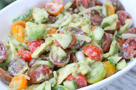
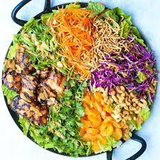
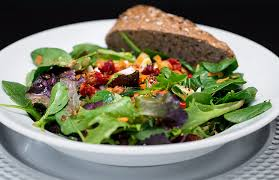
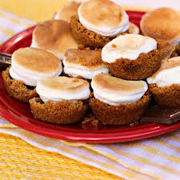
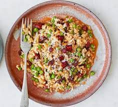
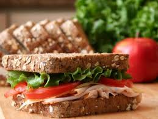

Potato Salad Recipes
Homemade Chicken Fajitas

15 Greek Grilled Chicken Recipes
Looking for a crowd-pleasing recipe to make on the grill? Your search ends here: these Greek-inspired grilled chicken dishes are sure to satisfy everyone at your dinner table
Most Popular

Camping Recipes

100+ Banana Bread Recipes
What to Make to Celebrate Every Food Holiday in May

9 Pizza Mashups That Are Pure Cheesy Brilliance